Interesting Facts About Motorcycles
Motorcycles are designed to be driven by just one driver. However, what is awesome about motorcycles is clear, and that is they can have a passenger riding the back of them as well. There are also some specially made motorcycles that have a sidecar built on them and a passenger can also be seated to ride in the sidecar. These vehicles are used to transport people from one place to another and are a form of transportation just like cars are.Modern sports bike tires don’t contain any actual rubber in them. Why is that? It is because they are often composed of synthetic rubber and the reason for this is the synthetic rubber works far better as a compromise for durability and traction.
Many of the most popular motorcycle companies today are extremely versatile in their products. Kawasaki not only creates motorcycles, but it also manufactures space rockets, ships, trains, personal water crafts, jet engines, electronics, helicopters, equipment tractors, and even missiles. Suzuki another popular motorcycle manufacturer, actually started with the looming business to cater to the developing silk industry in the early 20th century. It presently makes wheelchairs, cars, and marine engines. Yamaha, another popular motorcycle brand, started as a piano manufacturer. It still makes musical instruments even today apart from its other products like golf carts, car engines, industrial robots, boats, electronics, RVs, and wheelchairs.
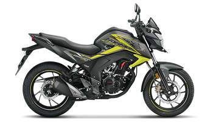
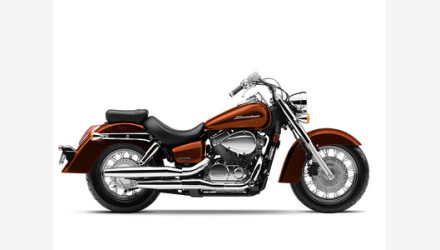
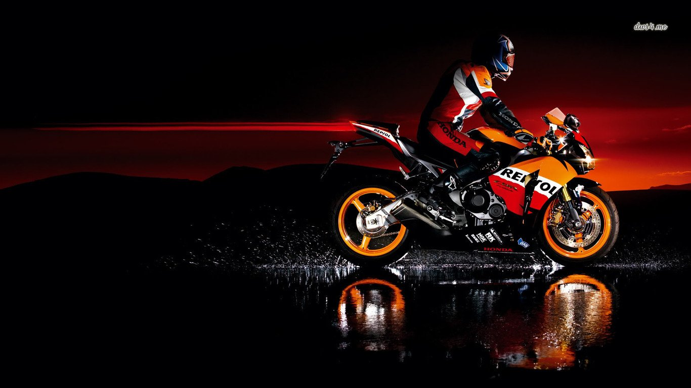
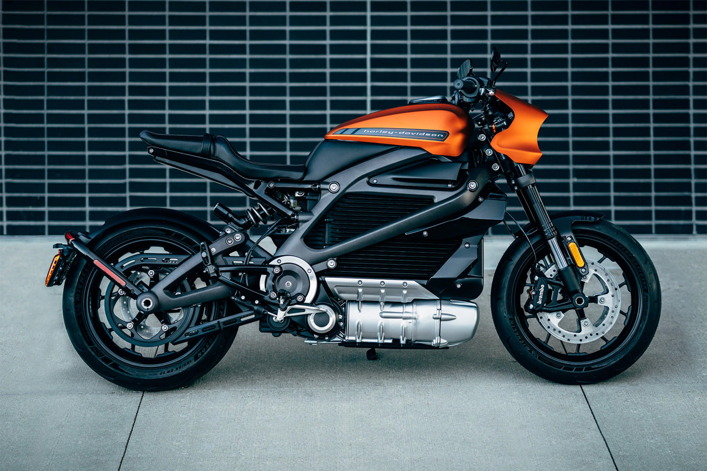
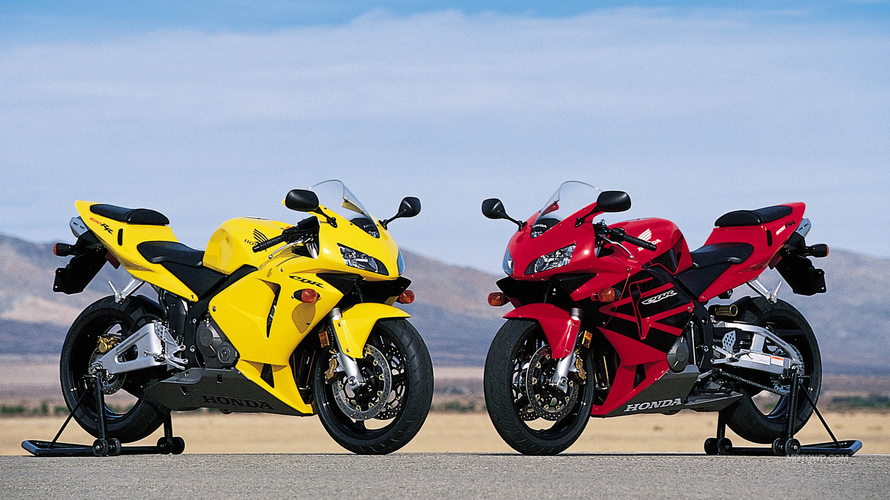
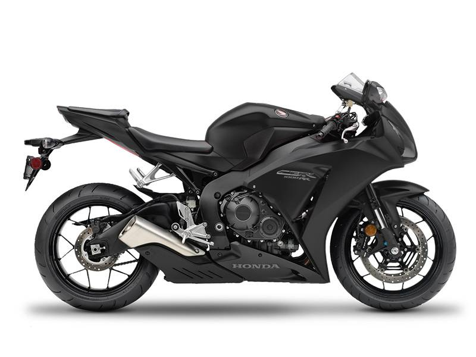
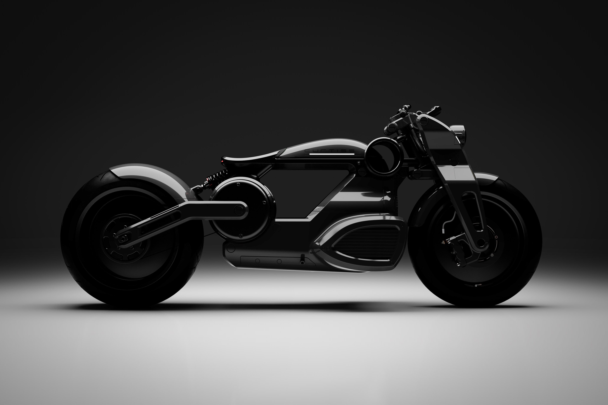
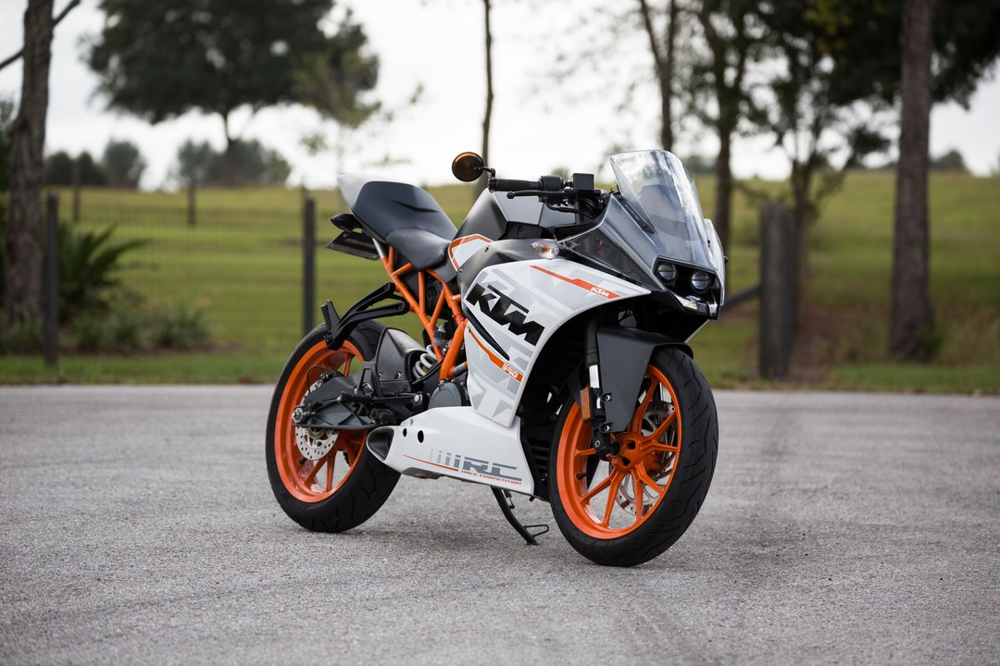
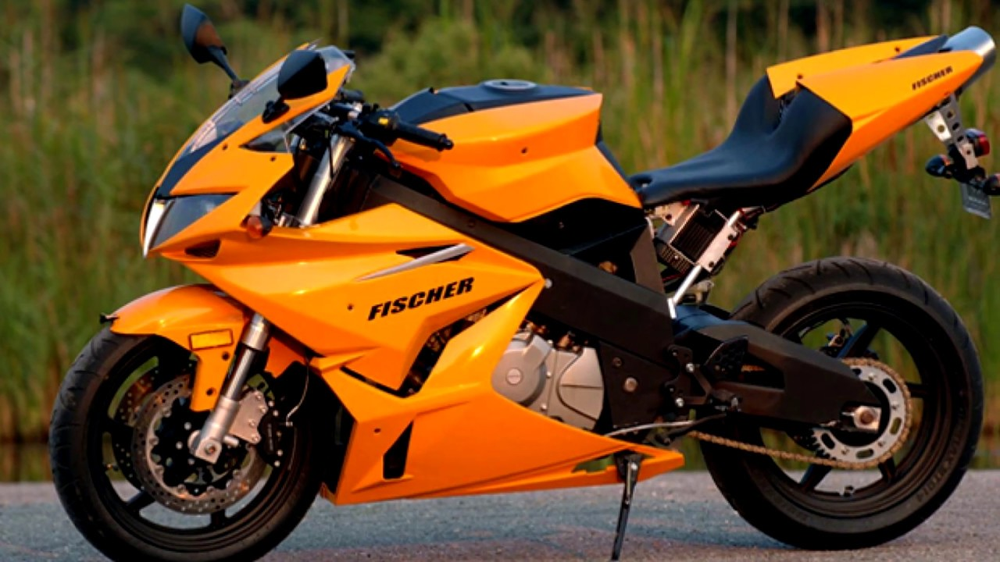
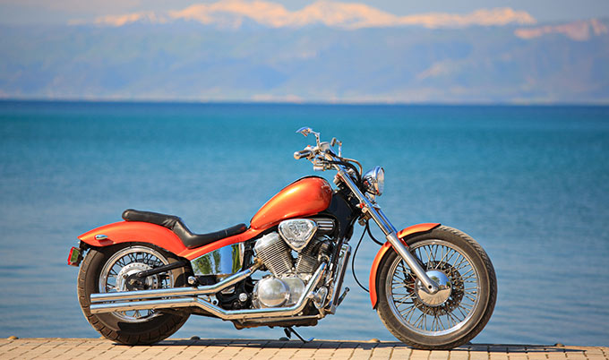

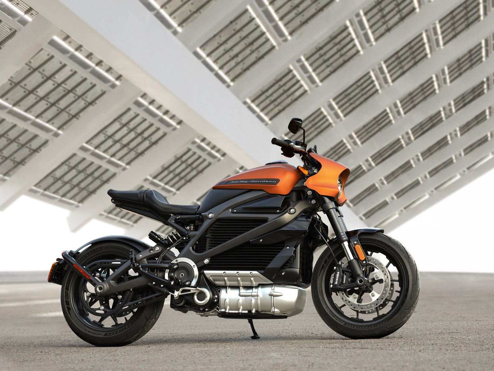
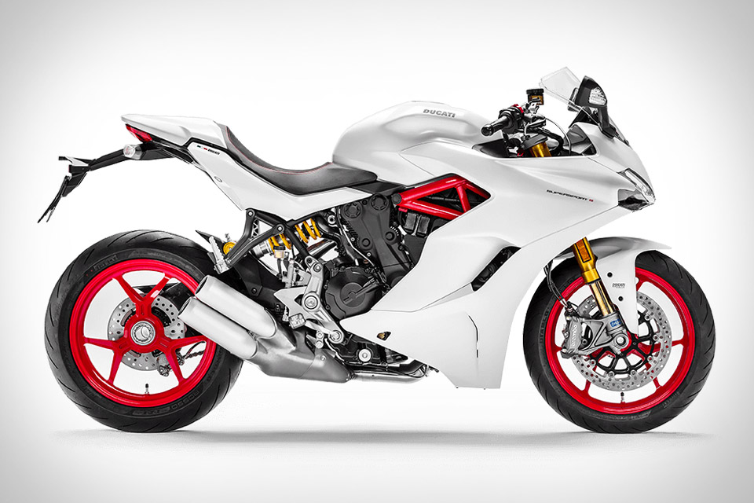
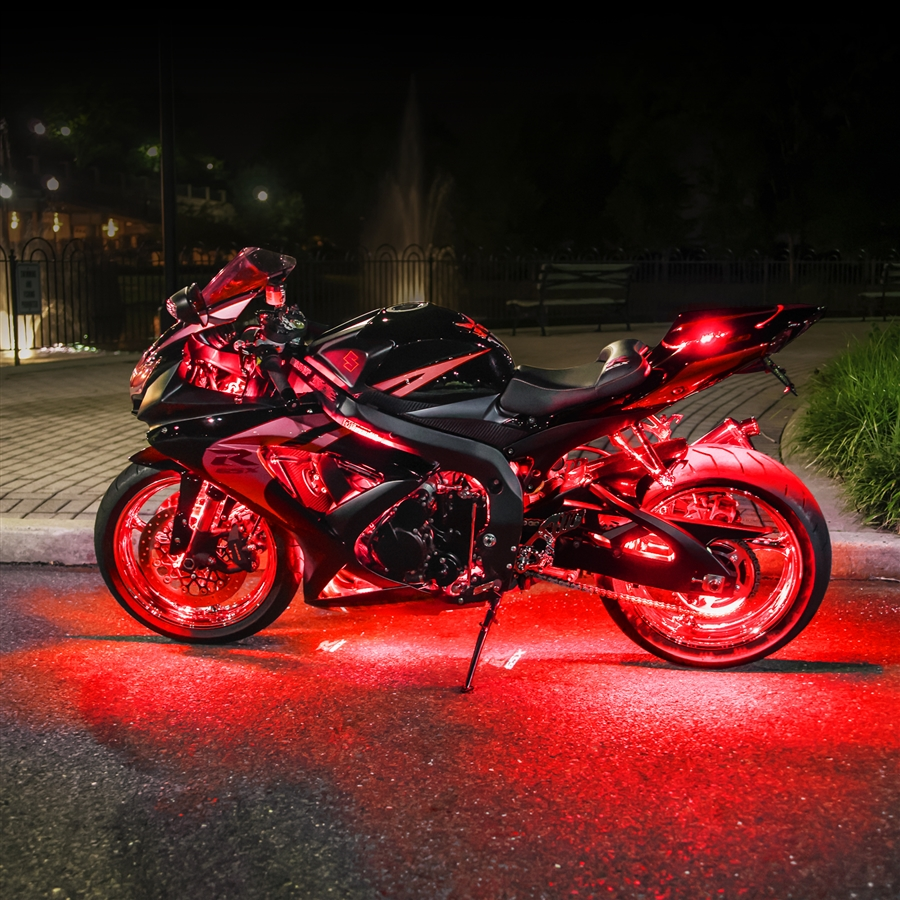
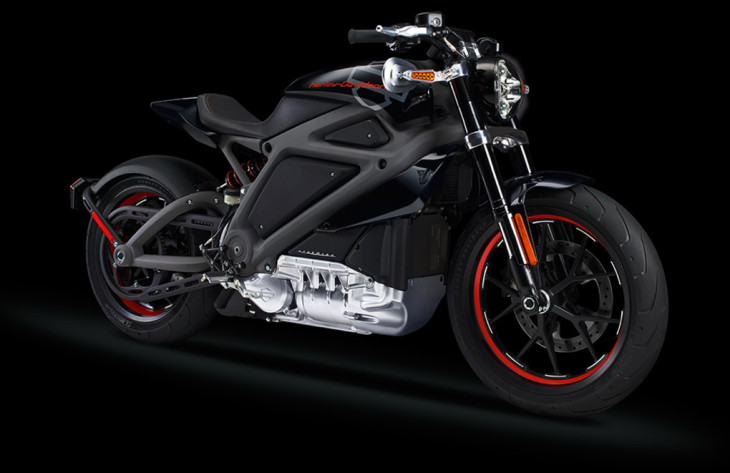